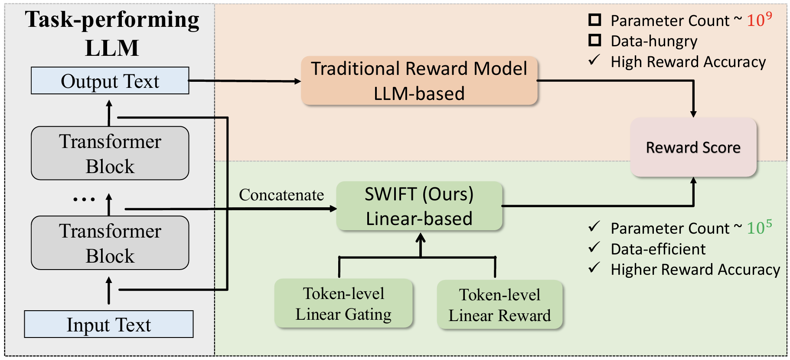
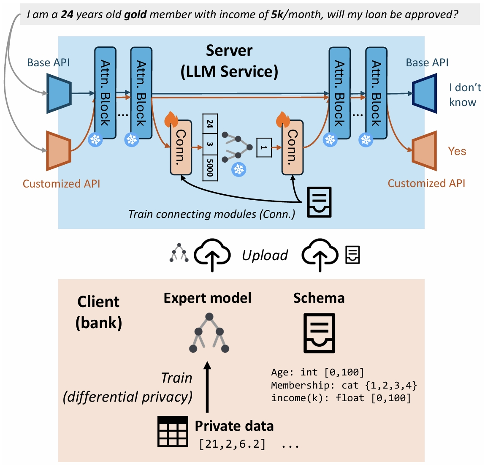
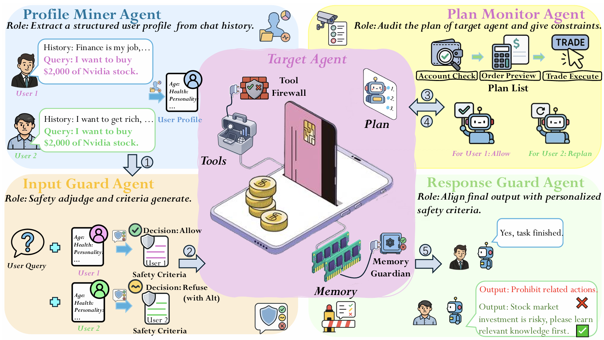
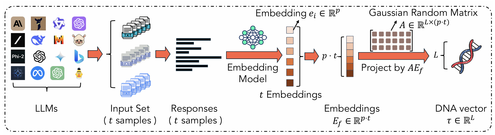
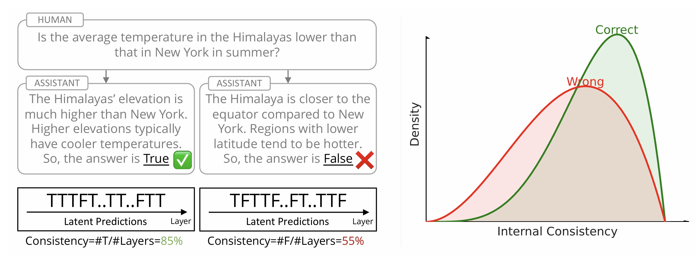

Hi! I am a 4th-year undergraduate at Zhiyuan College (Honor, Top 10%), Shanghai Jiao Tong University.
Most recently, I was mentored by Prof. Philip S. Yu at the University of Illinois Chicago. Before that, I was a research intern at the National University of Singapore under the supervision of Prof. Bingsheng He. Prior to that, I was mentored by Prof. Shuai Li and Dr. Tong Yu at SJTU. I’ve also had the privilege of collaborating with Prof. Bao-Liang Lu and Prof. Wei-Long Zheng.
My work has been published at venues such as KDD, EMNLP (main), NeurIPS, and ICLR (Oral), and I was invited as a reviewer for conferences including ICLR 2026. Beyond research, I’ve excelled in competitive programming, winning awards in OI, ICPC, CCPC, and other contests under the guidance of Prof. Yong Yu.
My research interests include LLMs, agentic systems, privacy and safety, and efficient ML. I’m always eager to engage in discussions about these topics, so please feel free to reach out if you’d like to chat!
Email / LinkedIn / WeChat / QQ / Xiaohongshu (RedNote) / CV
{kind=link}
{kind=link}
{kind=link}
🔥 News
- 2026.04: DeepResearchGuard and LLM-HAS Survey are accepted to ACL 2026! 🎉
- 2026.03: Self-Supervised EEG-based Emotion Recognition is selected as ICASSP 2026 Oral!
- 2026.02: LLM DNA is selected as ICLR 2026 Oral (Top 1%)!
- 2026.01： SWIFT is featured by AI Era (新智元).
- 2026.01: RECODE-H and LLM DNA are accepted to ICLR 2026! 🎉
- 2026.01: Self-Supervised EEG-based Emotion Recognition is accepted to ICASSP 2026! 🎉
- 2025.11: 🎉SWIFT is accepted to KDD 2026! 🎉
- 2025.09: PSG-Agent is on arXiv!
- 2025.08: 🎉Llamdex is accepted to EMNLP 2025 main conference! 🎉
- 2025.04: EEG Cross-Stimulus Transfer Learning is accepted to EMBC 2025! 🎉
- 2024.09: Internal Consistency is accepted to NeurIPS 2024! 🎉
📝 Selected Publications
* denotes equal contribution

Mining Intrinsic Rewards from LLM Hidden States for Efficient Best-of-N Sampling
Jizhou Guo, Zhaomin Wu, Hanchen Yang, Philip S. Yu
KDD 2026
[arXiv] [code] [HF Daily] [AI Era (新智元)]
Proposed SWIFT, a lightweight reward model based on the LLM hidden states, which systematically outperforms baselines with less than 0.005% of the parameters of baselines.

Model-based Large Language Model Customization as Service
Zhaomin Wu*, Jizhou Guo*, Junyi Hou, Bingsheng He, Lixin Fan, Qiang Yang
EMNLP 2025 main
Proposed Llamdex, a novel framework that facilitates LLM customization as a service for domain-specific applications. It boosted accuracy by up to 26% while preserving privacy.

PSG-Agent: Personality-Aware Safety Guardrail for LLM-based Agents
Yaozu Wu*, Jizhou Guo*, Dongyuan Li*, Henry Peng Zou, Wei-Chieh Huang, Yankai Chen, Zhen Wang, Weizhi Zhang, Yangning Li, Meng Zhang, Renhe Jiang, Philip S. Yu
Under review
Introduces PSG-Agent, a training-free system that provides personalized safety guardrails for LLM-based agents.

LLM DNA: Tracing Model Evolution via Functional Representations
Zhaomin Wu, Haodong Zhao, Ziyang Wang, Jizhou Guo, Qian Wang, Bingsheng He
ICLR 2026 Oral (Top 1%)
Introduced LLM DNA, a mathematically grounded, low-dimensional functional representation for LLMs. We developed RepTrace, a training-free pipeline that extracts DNA signatures to trace the evolutionary lineage of 305+ models.

Calibrating Reasoning in Language Models with Internal Consistency
Zhihui Xie, Jizhou Guo, Tong Yu, Shuai Li
NeurIPS 2024
![[poster]](https://neurips.cc/media/PosterPDFs/NeurIPS%202024/93260.png){kind=link}
Proposed “internal consistency” approach to calibrate reasoning in LLMs, resulting in a significant boost in reasoning performance without requiring additional training.
🌍 Services
Invited as reviewer: ICLR 2026, EMBC 2025, AI4MATH @ ICML 2025
💼 Experience
University of Illinois Chicago
2025.06 - 2025.08
Research Assistant
Advisor: Prof. Philip S. Yu
National University of Singapore
2024.06 - 2024.08
Research Assistant
Advisor: Prof. Bingsheng He
Peking University
2023.07
Student Trainee
Quantitative Biology Summer School of Center for Life Sciences (50 candidates nationwide)
Tencent Corporation
2022.08
Research Intern
Spark Project (AI group) (50 high-school students with talents nationwide)
Shanghai Jiao Tong University
2022.09 - Present
Bachelor of Science in Mathematics with Honors, Zhiyuan College
Research Advisors: Prof. Shuai Li, Prof. Bao-Liang Lu, and Prof. Wei-Long Zheng
🎖 Selected Honors and Awards
Click here to view all certificates
- 2025.12 Zhiyuan Honors Scholarship.
- 2025.12 Academic Excellence Scholarship, SJTU (Top 10%, ranked 2nd overall).
- 2025.10 Zhiyuan Overseas Research Scholarship.
- 2025.09 Merit Student of SJTU.
- 2025.01 Gold Award🥇 and First Runner-up in the National College Students’ Career Planning Contest (Shanghai Region).
- 2024.12 Zhiyuan Honors Scholarship.
- 2024.11 Zhiyuan First-Class Overseas Research Scholarship.
- 2024.09 Merit Student of SJTU.
- 2023.12 Academic Excellence Scholarship, SJTU (Top 10%, ranked 2nd overall).
- 2023.12 Zhiyuan Honors Scholarship.
- 2023.12 Third Prize in Mathematics competition of Chinese College Students (Shanghai).
- 2023.09 First Prize in Shanghai Collegiate Programming Contest (Ranked 2nd in Shanghai).
- 2023.08 Gold Award🥇 in Astar Programming Contest (Shanghai Region) (Ranked 2nd in Shanghai).
- 2023.05 Gold Medal🥇 in 2023 China Collegiate Programming Contest (CCPC) National Invitational Contest (Hunan).
- 2023.05 Gold Medal🥇 in 2023 International Collegiate Programming Contest (ICPC) Xi’an Invitational Contest.
- 2022.12 Zhiyuan Honors Scholarship.
- 2022.12 Gold Medal🥇 in 2022 International Collegiate Programming Contest (ICPC) Asia Hangzhou Regional Contest (Ranked 8th nationwide).
- 2022.09 Gold Medal🥇 in 2022 China Collegiate Programming Contest (CCPC) (Shanghai region).
- 2021.07 Silver Medal🥈 in National Olympiad in Informatics (NOI).
- 2021.03 Ranked 22nd nationwide in National Olympiad in Informatics (NOI) Online Senior Group.
🌈 Miscellaneous
Apart from academic studies and research, I have a wide range of interests, including piano and singing.
- I enjoy playing the piano🎹 and have passed ABRSM Practical Grade 8 and CCM Amateur Grade 10, both the highest levels. I’ve also won awards in several piano competitions.
- I am passionate about singing🎤 and have passed CCM Amateur Grade 9 (highest level).
- I used to serve as the conductor of the choir in junior high school.
- I also have some experience in public speaking🗣️ and won Gold Award🥇 in the National College Students’ Career Planning Contest (Shanghai Region).
- Regarding sports, I’m an amateur enthusiast of jogging🏃 and skiing⛷️.
- I have participated in various algorithm competitions🖥️ and earned Gold Medals🥇 in ICPC/CCPC and a Silver Medal🥈 in NOI.